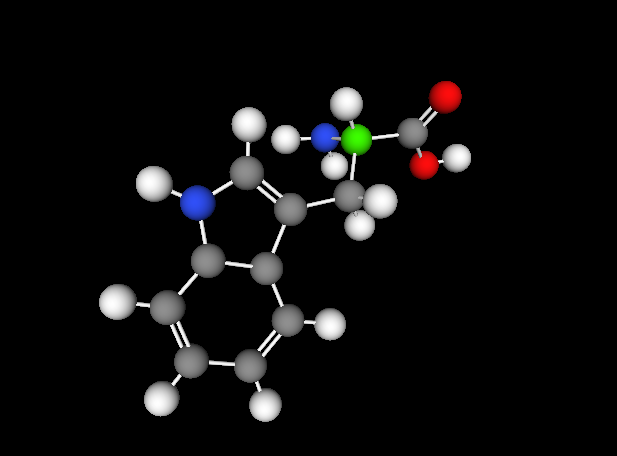
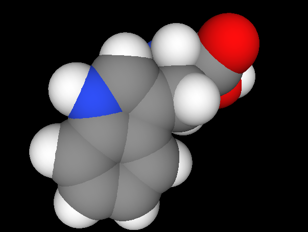
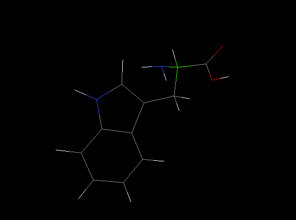

Tipi di visualizzazione
- Balls and Sticks 
- Van Der Waals Spheres 
- Stick
- Lines 
|
|

|
Antonio Gallo
Daniele D'Andrea
Federico Dell'Osso
Luca Insola
Marcin Kwiatkowski
Biomedical Informatics & Computational Graphics 2012
Creare un visualizzatore di proteine in ambiente web a partire da informazioni ricavate dal Database PDB (Protein Data Bank)
|
|
|